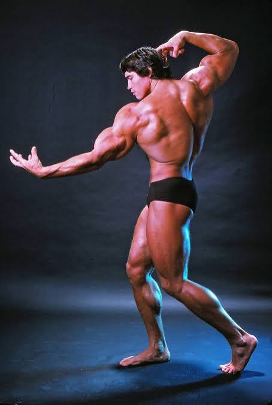

Pictures
-
Include 1 image using an IMG tag.

- Create a Favicon and link to it using a link tag.
- Answer the following questions on your page:
- What kind of photos are good to encode using JPEG?
Usually photos of real life people or places. JPEG shrinks the files omitting tiny details that the eye can't really notice.
- What kind of photos are good to encode using GIF?
Images like logos, icons, or basic drawings. GIF doesn't really look good for real photos because they can only use 256 colors. Its also good for simple animations.
- What is unique about the PNG format?
PNG does not lose quality when it saves and it also supports transparency so its really good for logos because it can sit well over other images.
- How do you resize your photo to the size it should be displayed?
First, figure out how wide the image will show on your page. Then open the photo in an editor like Photoshop, GIMP, or Photopea and use "Image Size" or "Resize." Set the width in pixels, keep the proportions locked so it doesn't stretch, and export the smaller version for your site.
- Why should you resize photos using photo editing software instead of resizing it using CSS?
CSS only changes how the image looks on screen. Its better to resize the photo in another app like photoshop so it makes the actual file size smaller. This ensures the file loads faster on the page, especially on phones.
- What kind of photos are good to encode using JPEG?